חזרה על גרפים — ייצוגים, BFS, DFS
⏱ זמן משוער: 55 דק'
0. אינטואיציה — למה חוזרים על גרפים?
כמעט כל אלגוריתם שנלמד בהמשך הקורס — עצים פורשים מינימליים, מסלולים קצרים ביותר, רשתות זרימה — רץ מעל גרף. גרף הוא פשוט אוסף של נקודות (קדקודים) שחלקן מחוברות בקווים (קשתות). לפני שנבנה אלגוריתמים מתוחכמים, צריך שתי יכולות בסיסיות: לדעת איך לאחסן גרף בזיכרון (ייצוג), ולדעת איך לטייל בו באופן שיטתי (סריקה). היחידה הזו מכסה בדיוק את שני אלה: שני הייצוגים המרכזיים, ושתי הסריקות היסודיות — BFS (סריקת רוחב) ו-DFS (סריקת עומק).
המרצה משתמש לאורך כל השיעור באותו "גרף רץ" קבוע: רשת 2×4 של הקדקודים A–H. אותה צורה חוזרת גם כגרף לא מכוון וגם כגרף מכוון — נוח לזיהוי במבחן.
מקור: lec-graph-review.pdf (עמ' 1–2)
1. הגדרות וסימונים
גרף מסומן G=(V,E), כאשר V היא קבוצת הקדקודים (המרצה כותב "קבוצת הקודקודים") ו-E קבוצת הקשתות. על אותו גרף רץ (רשת A–H) המרצה מדגיש מושג אחד בכל שקף:
- גרף לא מכוון (undirected graph) — הקשתות חסרות כיוון; A–B פירושה ש-A ו-B מחוברים בשני הכיוונים.
- שכנים ומסלול — שני קדקודים הם שכנים (neighbors) אם יש ביניהם קשת (למשל A ו-B). מסלול (path) הוא רצף קדקודים המחוברים בקשתות עוקבות (למשל A→B→F).
- מעגל (cycle) — מסלול שמתחיל ומסתיים באותו קדקוד; בגרף הרץ המרצה מדגים על המשולש A–B–E.
- גרף קשיר (connected graph) — קיים מסלול בין כל זוג קדקודים.
- עץ (tree) — גרף קשיר וחסר מעגלים; תת-קבוצת קשתות פורשת שאין בה מעגל.
1.1 גרף מכוון והרחבותיו
בגרף מכוון (directed graph) לכל קשת יש כיוון (חץ): A→B אינה זהה ל-B→A. אותו סימון G=(V,E) נשמר, אך עכשיו הופיעו זוגות קשתות הפוכות (למשל C↔D, F↔G) ואף לולאה עצמית ב-H. לגרף מכוון שני מושגי קשירות חדשים:
- גרף קשיר היטב (strongly connected) — קיים מסלול מכוון בין כל זוג קדקודים בשני הכיוונים.
- גרף קשיר חלש (weakly connected) — הגרף הופך לקשיר אם מתעלמים מכיווני הקשתות.
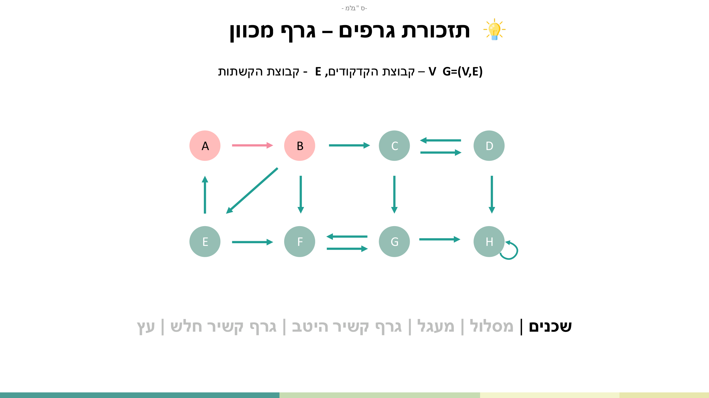
מקור: lec-graph-review.pdf (עמ' 2–14)
2. ייצוג גרפים — adjacency list מול adjacency matrix
המרצה מציג שלושה ייצוגים זה לצד זה על אותו גרף דוגמה מכוון בן 4 קדקודים (קשתות 1→2, 1→3, 2→3, 2→4, 4→1, 4→2, 4→3). ההבדל ביניהם הוא איזון בין מקום למהירות גישה:
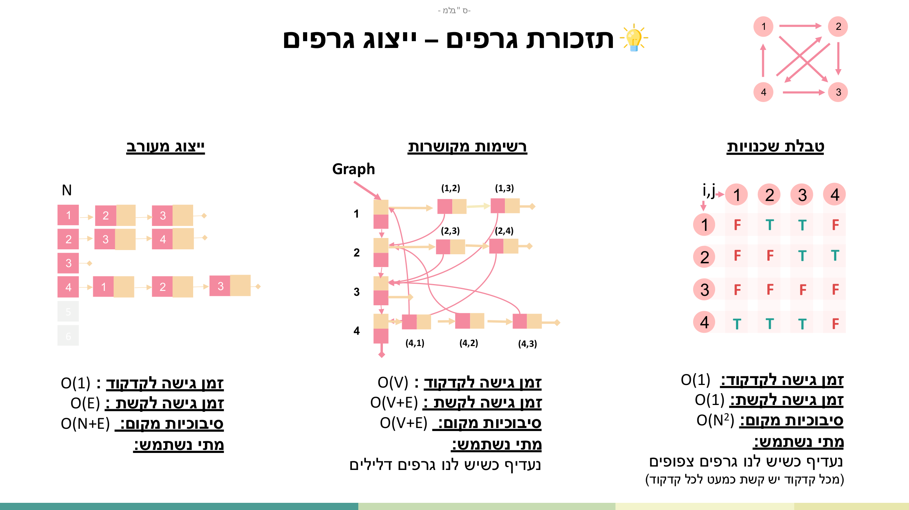
| ייצוג | גישה לקדקוד | גישה לקשת | מקום | מתי נשתמש |
|---|---|---|---|---|
| ייצוג מעורב (mixed) | O(1) | O(E) | O(N+E) | מערך קדקודים + רשימת שכנים לכל תא. |
| רשימות שכנויות (adjacency lists) | O(V) | O(V+E) | O(V+E) | גרפים דלילים (sparse). |
| טבלת שכנויות (adjacency matrix) | O(1) | O(1) | O(N²) | גרפים צפופים (dense). |
מקור: lec-graph-review.pdf (עמ' 15)
3. DFS — סריקת עומק
DFS (Depth-First Search) "צולל לעומק": מכל קדקוד ממשיכים לשכן שעדיין לא ביקרנו בו, עד שנתקעים, ואז חוזרים אחורה (backtrack). כדי לעקוב אחר ההתקדמות צובעים כל קדקוד באחד משלושה צבעים — לבן (טרם נסרק), אפור (בעבודה, נמצא במחסנית הרקורסיה), שחור (הסתיים) — ורושמים לכל קדקוד שני זמני d/f.
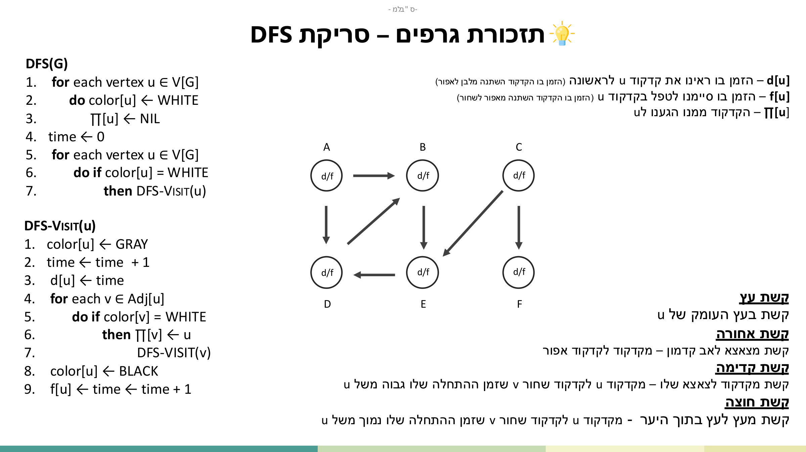
3.1 הפסאודו-קוד (כלשונו במצגת)
DFS(G) 1. for each vertex u ∈ V[G] 2. do color[u] ← WHITE 3. ∏[u] ← NIL 4. time ← 0 5. for each vertex u ∈ V[G] 6. do if color[u] = WHITE 7. then DFS-VISIT(u) DFS-VISIT(u) 1. color[u] ← GRAY 2. time ← time + 1 3. d[u] ← time 4. for each v ∈ Adj[u] 5. do if color[v] = WHITE 6. then ∏[v] ← u 7. DFS-VISIT(v) 8. color[u] ← BLACK 9. f[u] ← time ← time + 1
הגדרת המשתנים (מצד ימין של השקף):
- d[u] — זמן הגילוי: הרגע שבו ראינו את u לראשונה (השתנה מלבן לאפור).
- f[u] — זמן הסיום: הרגע שבו סיימנו לטפל ב-u (השתנה מאפור לשחור).
- ∏[u] — הקדקוד ממנו הגענו אליו (ההורה בעץ ה-DFS).
3.2 הסבר שורה-שורה
- DFS(G) שורות 1–3: אתחול — כל קדקוד נצבע לבן (WHITE) וההורה ∏ מאותחל ל-NIL.
- שורה 4: איפוס המונה הגלובלי time ← 0.
- שורות 5–7: מעבר על כל הקדקודים; אם קדקוד עדיין לבן, מתחילים ממנו DFS-VISIT — כך נסרקים כל העצים ביער, גם אם הגרף אינו קשיר.
- DFS-VISIT(u) שורה 1: צביעת u אפור — "בעבודה".
- שורות 2–3: קידום time ורישום זמן הגילוי d[u].
- שורות 4–7: מעבר על כל שכן v ∈ Adj[u]; אם v לבן — קובעים ∏[v]←u וקוראים רקורסיבית DFS-VISIT(v).
- שורה 8: לאחר סיום כל השכנים, צביעת u שחור.
- שורה 9: קידום time ורישום זמן הסיום f[u].
3.3 סיווג קשתות (edge classification)
הצבע של השכן v ברגע שבודקים את הקשת u→v קובע את סוג הקשת:
- קשת עץ (tree edge) — v לבן; זו קשת בעץ העומק.
- קשת אחורה (back edge) — v אפור (GRAY); קשת מצאצא לאב-קדמון. קיומה מעיד על מעגל.
- קשת קדימה (forward edge) — v שחור עם d[v] > d[u]; קשת מקדקוד לצאצא שלו.
- קשת חוצה (cross edge) — v שחור עם d[v] < d[u]; קשת בין עצים ביער.
3.4 סייר אינטראקטיבי — הריצו את הדוגמה מההרצאה
3.5 הרצת DFS על גרף הדוגמה של המרצה
הגרף המכוון של הדוגמה: קדקודים A, B, C (שורה עליונה) ו-D, E, F (שורה תחתונה), עם הקשתות A→B, A→D, D→B, B→E, C→E, C→F, E→D. הלולאה החיצונית סורקת בסדר A, B, C. הנה המהלך המלא (קשת העץ הנוכחית מודגשת בירוק במצגת):
| time | אירוע | סיווג / הערה |
|---|---|---|
| 1 | A מתגלה (אפור), d[A]=1 | התחלת עץ ראשון |
| 2 | A→B, B לבן ⇒ d[B]=2 | קשת עץ |
| 3 | B→E, E לבן ⇒ d[E]=3 | קשת עץ |
| 4 | E→D, D לבן ⇒ d[D]=4 | קשת עץ |
| — | D→B, B אפור | קשת אחורה (מעגל B→E→D→B) |
| 5 | D סיים ⇒ f[D]=5 (שחור) | D = 4/5 |
| 6 | E סיים ⇒ f[E]=6 | E = 3/6 |
| 7 | B סיים ⇒ f[B]=7 | B = 2/7 |
| — | A→D, D שחור, d[D]=4 > d[A]=1 | קשת קדימה |
| 8 | A סיים ⇒ f[A]=8 | A = 1/8; עץ ראשון הושלם |
| 9 | C לבן ⇒ מתחילים עץ שני, d[C]=9 | התחלת עץ שני |
| — | C→E, E שחור, d[E]=3 < d[C]=9 | קשת חוצה |
| 10 | C→F, F לבן ⇒ d[F]=10 | קשת עץ |
| 11 | F סיים ⇒ f[F]=11 | F = 10/11 |
| 12 | C סיים ⇒ f[C]=12 | C = 9/12 |
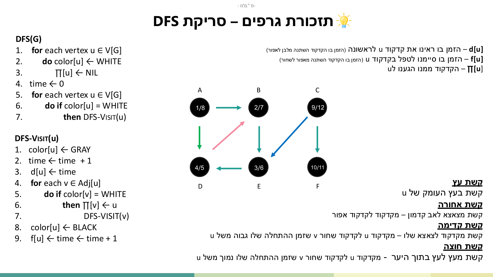
מקור: lec-graph-review.pdf (עמ' 16–31)
4. יער ה-DFS ותכונת מבנה הסוגריים
הקריאות המקוננות ל-DFS-VISIT מייצרות אוסף עצים — יער ה-DFS (DFS forest). קדקודי כל עץ מקבלים קטע זמן [d[u], f[u]], והמסר המרכזי של המרצה: "כל קדקודי עץ נמצאים בין זמן ההתחלה לזמן הסיום של קדקוד האב". זוהי תכונת מבנה הסוגריים.
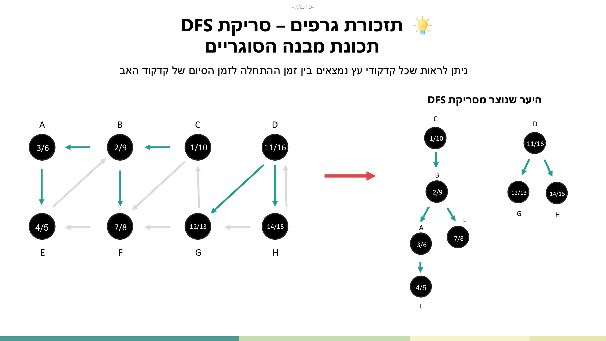
בדוגמה זו (גרף אחר מהקודם) הזמנים הם A=3/6, B=2/9, C=1/10, D=11/16, E=4/5, F=7/8, G=12/13, H=14/15, והיער בנוי משני עצים: אחד מושרש ב-C (C→B→A→E, B→F) ואחד מושרש ב-D (D→G, D→H).
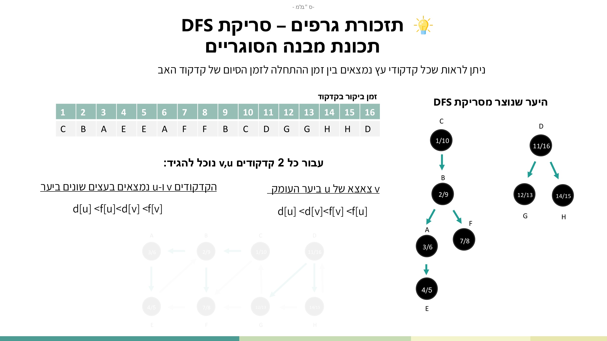
מקור: lec-graph-review.pdf (עמ' 32–33)
5. BFS — סריקת רוחב
BFS (Breadth-First Search) סורק את הגרף בשכבות מרחק עולה מהמקור s: קודם כל שכניו הישירים (מרחק 1), אז שכני-השכנים (מרחק 2), וכן הלאה. במקום מחסנית רקורסיה, BFS משתמש בתור (queue) בשיטת FIFO, ולכן הוא מוצא את המסלול הקצר ביותר (במספר קשתות) בגרף לא ממושקל.
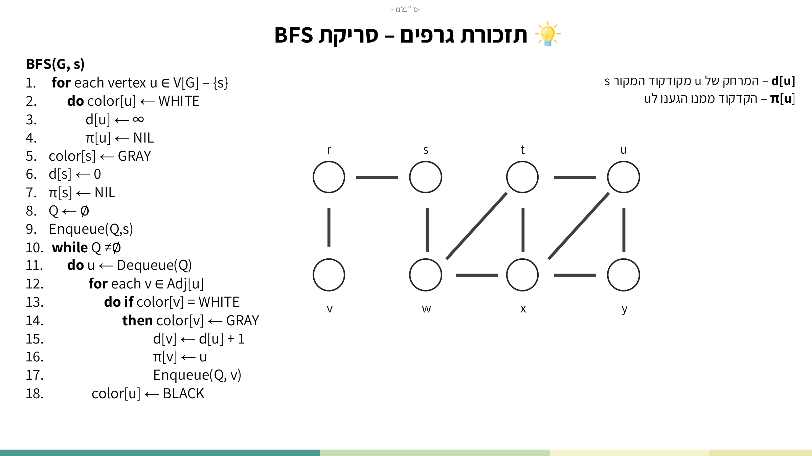
5.1 הפסאודו-קוד (כלשונו במצגת)
BFS(G, s)
1. for each vertex u ∈ V[G] – {s}
2. do color[u] ← WHITE
3. d[u] ← ∞
4. π[u] ← NIL
5. color[s] ← GRAY
6. d[s] ← 0
7. π[s] ← NIL
8. Q ← ∅
9. Enqueue(Q,s)
10. while Q ≠ ∅
11. do u ← Dequeue(Q)
12. for each v ∈ Adj[u]
13. do if color[v] = WHITE
14. then color[v] ← GRAY
15. d[v] ← d[u] + 1
16. π[v] ← u
17. Enqueue(Q, v)
18. color[u] ← BLACK
הגדרת המשתנים: d[u] — המרחק של u מהמקור s (במספר קשתות); π[u] — הקדקוד ממנו הגענו אליו (ההורה בעץ ה-BFS).
5.2 הסבר שורה-שורה
- שורות 1–4: אתחול כל הקדקודים פרט ל-s — לבן, d=∞, π=NIL.
- שורות 5–7: אתחול המקור s — אפור, d[s]=0, π[s]=NIL.
- שורות 8–9: יצירת תור ריק Q והכנסת s.
- שורות 10–11: כל עוד התור אינו ריק — מוציאים קדקוד u מראש התור.
- שורות 12–17: לכל שכן v של u; אם v לבן — צובעים אפור, קובעים d[v]=d[u]+1, π[v]=u, ומכניסים לתור.
- שורה 18: לאחר סיום כל השכנים, צובעים את u שחור.
5.3 הרצת BFS על גרף CLRS (מקור s)
רשימות השכנויות: r:{s,v}, s:{w,r}, w:{s,t,x}, t:{w,u,x}, x:{w,t,u,y}, u:{t,x,y}, v:{r}, y:{u,x}. מהלך התור:
| מוציאים u | שכנים לבנים שנצבעים | מצב התור Q אחרי הצעד |
|---|---|---|
| — (אתחול) | s אפור, d[s]=0 | [s] |
| s | w=1, r=1 | [w, r] |
| w | t=2, x=2 | [r, t, x] |
| r | v=2 | [t, x, v] |
| t | u=3 | [x, v, u] |
| x | y=3 | [v, u, y] |
| v | אין שכנים לבנים | [u, y] |
| u | אין שכנים לבנים | [y] |
| y | אין שכנים לבנים | ∅ — סיום |
מרחקים סופיים מ-s: s=0; r=1, w=1; t=2, x=2, v=2; u=3, y=3.
מקור: lec-graph-review.pdf (עמ' 34–61)
6. מיון טופולוגי (topological sort)
מיון טופולוגי של גרף מכוון חסר-מעגלים (DAG) הוא סידור לינארי של הקדקודים כך שלכל קשת u→v, הקדקוד u מופיע לפני v. זהו מודל טבעי ל"מטלות עם תלויות" (למשל סדר קורסי-קדם). המיון קיים אם ורק אם אין מעגלים — וכאן חוזר בדיוק מנגנון הקשת האחורה מ-DFS: אם DFS מגלה קשת אחורה, יש מעגל ואין מיון טופולוגי.
הרעיון (מבוסס DFS): מריצים DFS, ובכל פעם שקדקוד "מסתיים" (נצבע שחור, נקבע f[u]) דוחפים אותו לראש רשימה. בסיום, הרשימה מסודרת לפי f[u] יורד — וזה בדיוק סדר טופולוגי חוקי.
🎓 הרחבה — לא נדרש למבחן ביחידה זו. שני סרטונים קצרים להשלמת התמונה:
מקור: העשרה (מעבר למצגת lec-graph-review.pdf) — הבסיס f[u] נלמד בעמ' 16–31
7. תרגילי הקורס
המרצה פותר שלושה תרגילים בתבנית קבועה: נוסח שאלה → דוגמה עם קלט/פלט → פתרון (פסאודו-קוד) → הוכחת נכונות (אם-ורק-אם) → סיבוכיות. התבנית הזו היא בדיוק סגנון המבחן.
⬇ הורדת דף התרגיל (hw-1.pdf) · ⬇ הורדת הפתרון הרשמי (sol-hw-1.pdf)
תרגיל 1 — זיהוי מעגל בגרף מכוון
נתון G גרף מכוון, הציעו אלגוריתם הבודק האם קיים בגרף G מעגל - אם כן מחזיר True, אחרת מחזיר False
דוגמה: גרף מכוון בן 4 קדקודים A, B, D, E עם הקשתות A→B, A→D, B→E, E→D, D→B. קיים המעגל B→E→D→B ⇒ יש להחזיר True.
פתרון (כלשונו במצגת, עמ' 65–66):
findCircleInGraph(G): 1. return DFS-NEW(G) DFS-NEW(G) 1. for each vertex u ∈ V[G] 2. do color[u] ← WHITE 3. ∏[u] ← NIL 4. time ← 0 5. hasCircle ← False ← (תוספת, מודגש בירוק) 6. for each vertex u ∈ V[G] 7. do if color[u] = WHITE 8. then DFS-VISIT-New(u) 9. return hasCircle DFS-VISIT-New(u) 1. color[u] ← GRAY 2. time ← time + 1 3. d[u] ← time 4. for each v ∈ Adj[u] 5. do if color[v] = WHITE 6. then ∏[v] ← u 7. DFS-VISIT(v) 8. else if color[v] = GREY: ← (תוספת, מודגש בירוק) 9. then hasCircle ← True ← (תוספת, מודגש בירוק) 10. color[u] ← BLACK 11. f[u] ← time ← time + 1
נכונות (כלשונו במצגת, עמ' 66):
נרצה להראות שהאלגוריתם יחזיר True אם ורק אם קיים מעגל בגרף G:
⇐ נתון: האלגוריתם החזיר True, צ"ל: קיים מעגל בגרף. האלגוריתם יחזיר True אם בשורות 8+9 בפונקציית DFS-Visit-New, הקודקוד v שהוא שכן של קודקוד u צבוע בצבע אפור (קודקוד שכבר ביקרנו בו במהלך הסריקה). נגדיר את קודקוד v להיות הקודקוד הראשון במסלול ואת u הקודקוד האחרון במסלול זה. מהגדרת מעגל, מסלול בו הקודקוד הראשון שכן של הקודקוד האחרון, ניתן לראות שקיים המעגל v→u↝v. מ.ש.ל
⇒ נתון: קיים מעגל, צ"ל: האלגוריתם יחזיר True. אם קיים מעגל בגרף, קיים מסלול בו הקודקוד הראשון שכן של הקודקוד האחרון, כלומר, במהלך מסלול הסריקה, כבר ביקרנו בקודקוד הראשון במסלול. אם ביקרנו בקודקוד זה, הצבע שלו יהיה אפור וכשנבדוק את הצבע בשורה 8 באלגוריתם, התנאי יתקיים ונסמן שמצאנו מעגל, מכאן, האלגוריתם יחזיר True. מ.ש.ל
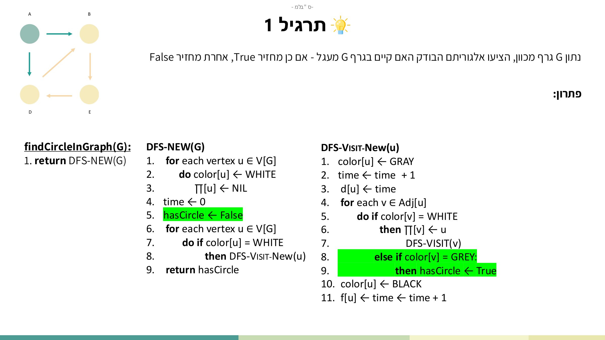
תרגיל 2 — בדיקת קשירות של גרף לא מכוון
נתון גרף לא מכוון. הציעו אלג' שבודק האם הוא קשיר
דוגמאות: גרף לא מכוון בן 6 קדקודים A, B, C (עליון) ו-D, E, F (תחתון). כשקיימת הקשת C–E הגרף קשיר ⇒ פלט true; בלעדיה, C מחובר רק ל-F והזוג {C, F} נהיה רכיב מנותק ⇒ פלט false.
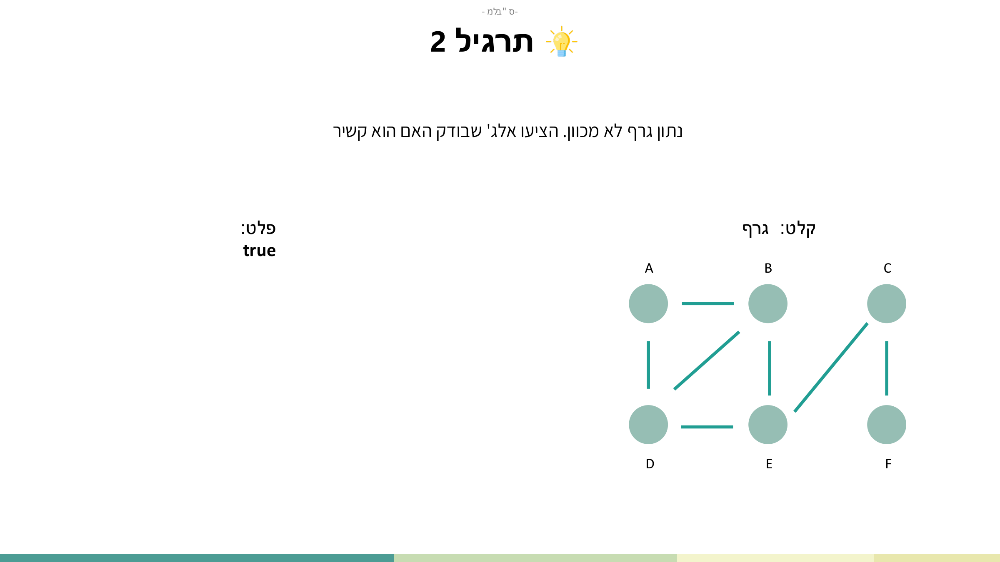
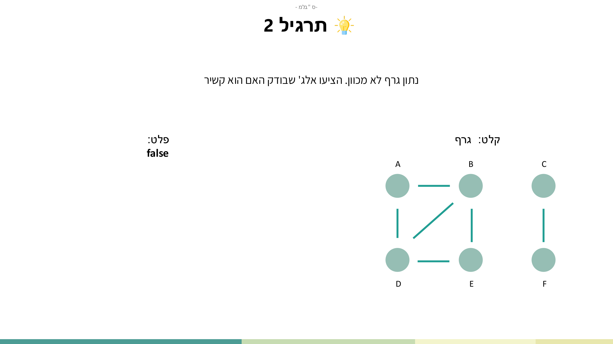
פתרון (כלשונו במצגת, עמ' 70–73):
isConnectedGraph(G) 1. s ← random(V[G]) 2. BFS(G, s) 3. for each vertex u ∈ V[G] 4. do if color[u] != BLACK 5. return FALSE 6. return TRUE
נכונות (כלשונו במצגת, עמ' 71–73):
נרצה להראות שהאלגוריתם מחזיר TRUE אם ורק אם הגרף קשיר.
⇐ הגרף הנתון G קשיר: עבור כל קודקוד בגרף, כשנבחר קודקוד שרירותי s ונריץ את אלגוריתם BFS, במהלך הסריקה נבקר בכל הקודקודים (נתון שהגרף קשיר) ולאחר הביקור האלגוריתם יצבע את הקודקוד בשחור. בלולאה לאחר הריצה, עבור כל קודקוד בגרף, צבע הקודקוד יהיה שחור ולכן נגיע לסיום הלולאה ונחזיר TRUE.
⇒ האלגוריתם החזיר TRUE: אם האלגוריתם החזיר TRUE זה אומר שכל קודקודי הגרף היו שחורים, אחרת, התנאי בלולאה של סעיף 3 היה מחזיר FALSE. כדי שכל קודקודי הגרף יהיו שחורים, הם צריכים להיות נגישים מקודקוד המקור s – ואם כל הקודקודים נגישים מקודקוד המקור בגרף לא מכוון – הגרף קשיר. מ.ש.ל
סיבוכיות (כלשונו במצגת, עמ' 73):
Θ(|V|+|E|) – כמו אלגוריתם BFS. בלולאה שהוספנו לכל היותר נעבור על כל הקודקודים ולכן אינה משפיעה לרעה על סיבוכיות זמן הריצה.
תרגיל 3 — כל הקדקודים שמהם ניתן להגיע ל-t
נתון גרף מכוון G = (V,E) וקודקוד t ∈ V.
תארו אלגוריתם המוצא את כל הצמתים שניתן להגיע מהם לקודקוד t.
(כלומר, כל הצמתים s ∈ V כך שקיים מסלול מ‑s ל‑t)
הסיבוכיות הנדרשת: Θ(|V| + |E|)
דוגמה: גרף מכוון עם קדקוד יעד t (כתום) ובשורה תחתונה A, B, C, D, קשתות A→t, A→B, C→t, C→B, D→C. הקדקודים שמהם ניתן להגיע ל-t הם A (ישירות), C (ישירות) ו-D (דרך D→C→t). B אינו יכול (אין לו קשת יוצאת). פלט: A, C, D.
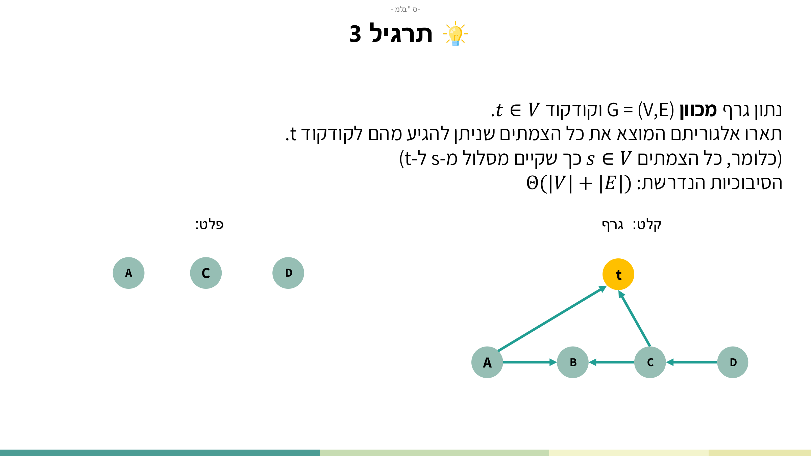
פתרון (כלשונו במצגת, עמ' 76–77):
accessibleToT(G, t)
1. Gᵀ ← ComputeTranspose(G)
2. BFS(Gᵀ, t)
3. for each vertex u ∈ V[Gᵀ] \ {t}
4. do if color[u] = BLACK
5. print(u)
נכונות (כלשונו במצגת, עמ' 77):
נרצה להראות שהאלגוריתם מחזיר את כל הקודקודים הנגישים לקודקוד t. אם קיים מסלול בגרף G המקורי מקודקוד u לקודקוד v – בגרף Gᵀ יהיה מסלול מקודקוד v לקודקוד u. בהסתמך על נכונות אלגוריתם BFS, כשנריץ את האלגוריתם על הגרף Gᵀ וקודקוד המקור t, נקבל את כל הקודקודים הנגישים מקודקוד t, כלומר, בגרף המקורי G הם היו הקודקודים הנגישים לקודקוד t (הקשת ההפוכה). מ.ש.ל
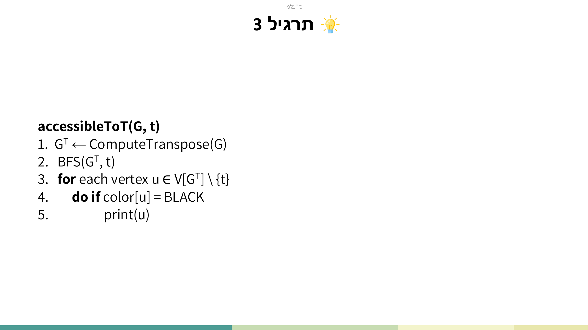
מקור: lec-graph-review.pdf (עמ' 62–77)
8. בדיקה עצמית
בהרצת ה-DFS של המרצה, הקשת A→D נסרקת אחרי ש-D כבר שחור עם d[D]=4 > d[A]=1. כיצד היא מסווגת?
במהלך DFS על גרף מכוון, מקדקוד u בודקים שכן v שצבעו אפור (GRAY). מה ניתן להסיק מיד?
בהרצת ה-BFS על גרף CLRS ממקור s, מהו המרחק הסופי d[u] של הקדקוד u (הקדקוד ששמו u)?
לפי תכונת מבנה הסוגריים, נתון ש-d[u] < d[v] < f[v] < f[u]. מה היחס בין u ל-v ביער ה-DFS?
עבור גרף דליל (sparse) בן n קדקודים, מהי סיבוכיות המקום של טבלת השכנויות (adjacency matrix), ומדוע מעדיפים עליה רשימות שכנויות?